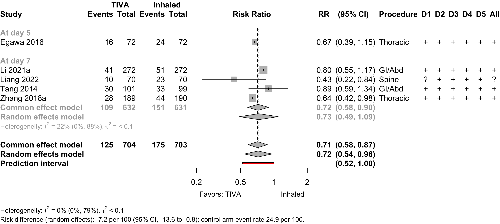
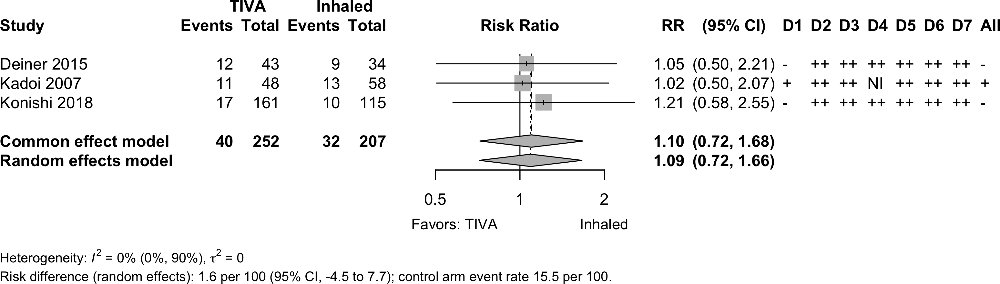
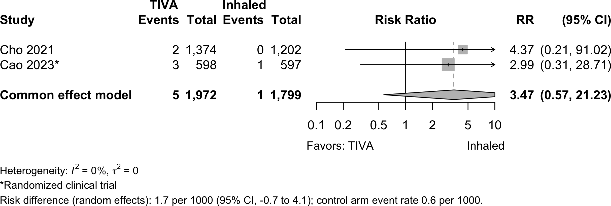
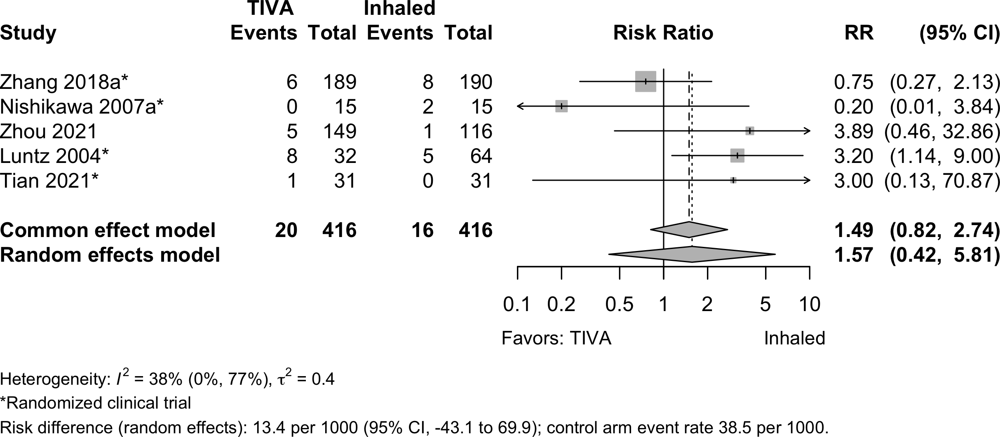
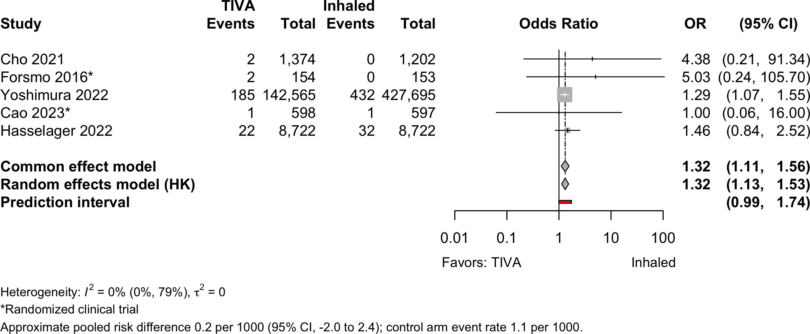
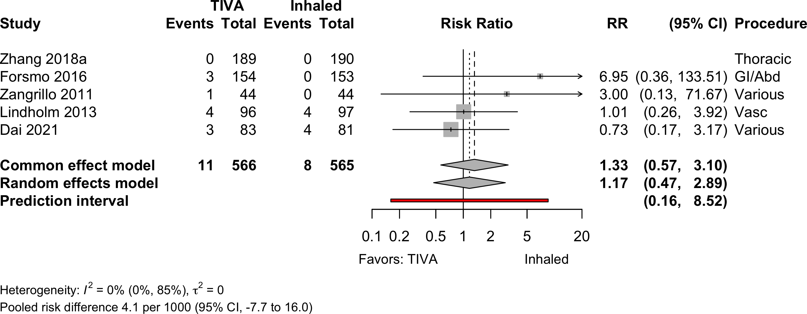
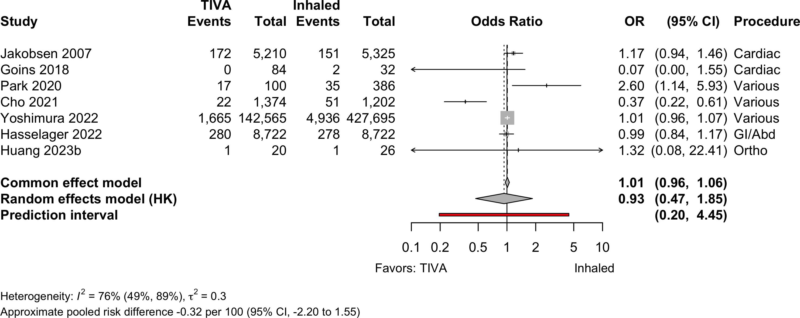
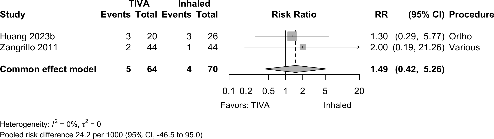
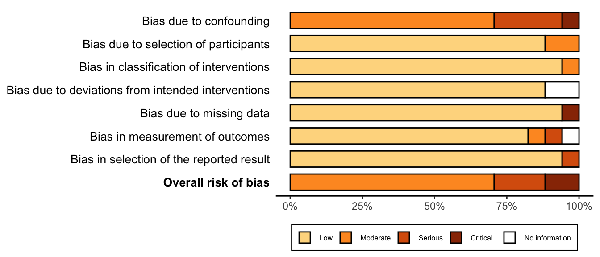

| Outcome | RCT | NRSI* | TIVA | Inhaled | GRADE† | Effect | Estimate (95% CI) |
|---|---|---|---|---|---|---|---|
| N (Total) | N (Total) | ||||||
| Delirium | 8 | 143 (1,001) | 158 (995) | RR | 0.94 (0.62–1.43) | ||
| 5 | 10,297 (142,850) | 32,955 (427,929) | OR | 1.01 (0.39–2.63) | |||
| Neurocognitive disorder <30 days | 5 | 125 (704) | 175 (703) | RR | 0.72 (0.54–0.96) | ||
| 1 | 24 (160) | 24 (119) | RR | 0.74 (0.44–1.24) | |||
| Neurocognitive disorder ≥30 days | 1 | 4 (96) | 6 (97) | RR | 0.67 (0.20–2.31) | ||
| 3 | 40 (252) | 32 (207) | RR | 1.09 (0.72–1.66) | |||
| Physical function | none | none | |||||
| Complications | 10 | 9 | see below | ||||
| Patient satisfaction | 3 | 90 (109) | 82 (141) | RR | 1.39 (1.19–1.63)‡ | ||
| Length of stay (days) | 6 | (1,343) | (1,341) | MD | 0.0 (-1.5 to 1.4) | ||
| 4 | (147,809) | (432,893) | MD | -0.6 (-2.4 to 1.5) | |||
| Discharged to institution | 1 | 8 (9) | 26 (20) | RR | 1.46 (0.69–3.41) | ||
| Mortality (in-hospital and 30-day) | 4 | 11 (377) | 8 (375) | RR | 1.17 (0.47–2.89) | ||
| 5 | 11 (566) | 8 (565) | RD/1000 | 4.1 (-7.7 to 16.0) | |||
| 7 | 1,876 (149,333) | 5,175 (434,640) | OR | 0.93 (0.47–1.85) | |||
| RD/1000 | -0.32 (-2.20 to 1.55) | ||||||
| Mortality (1-year) | 1 | 1 | 5 (64) | 4 (70) | RR | 1.47 (0.42–5.18) | |
| RD/1000 | 24.2 (-46.5 to 95.0) | ||||||
| RCT: randomized clinical trial; NRSI: nonrandomized studies of interventions; GRADE: Grades of Recommendation, Assessment, Development, and Evaluation; RR: risk ratio; MD: mean difference; RD: risk difference. | |||||||
| * Results from nonrandomized designed shown only when evidence not available from randomized trials. | |||||||
| † Very low: ⨁◯◯◯; Low: ⨁⨁◯◯; Moderate: ⨁⨁⨁◯; High: ⨁⨁⨁⨁. | |||||||
| ‡ Comparing higher/highest category or categories with lower ones. | |||||||
TIVA versus Inhaled (volatile) Anesthesia
Key Question
Among older patients undergoing surgery with general anesthesia, does the use of intravenous agents for maintenance of anesthesia improve postoperative outcomes compared with inhaled agents?
Balance Tables
| Outcome | RCT | NRSI | TIVA | Inhaled | GRADE* | Effect | Estimate (95% CI) |
|---|---|---|---|---|---|---|---|
| N (Total) | N (Total) | ||||||
| Myocardial infarction | 1 | 5 | 4,027 (157,987) | 8,898 (443,067) | OR | 0.90 (0.85–0.96) | |
| 2 | 5 | 4,027 (158,031) | 8,898 (443,111) | RD/1000 | -1.9 (3.0 to -0.7)† | ||
| Cardiac arrest | 1 | 1 | 5 (1,972) | 1 (1,799) | RR | 3.47 (0.57–21.2)‡ | |
| RD/1000 | 1.7 (-0.7 to 4.1)‡ | ||||||
| Bradycardia | 4 | 1 | 20 (416) | 16 (416) | RR | 1.57 (0.42–5.81) | |
| RD/1000 | 13.4 (-43.1 to 69.9) | ||||||
| Hypotension | 2 | 2 | 226 (919) | 237 (884) | RR | 0.99 (0.91–1.07 | |
| RD/1000 | -24.6 (-58.6 to 9.4) | ||||||
| Stroke | 1 | 1 | 37 (9,320) | 42 (9,319) | OR | 1.14 (0.73–1.78) | |
| RD/1000 | 0.5 (-2.4 to 1.3)† | ||||||
| Acute kidney injury | 1 | 5 | 823 (144,819) | 2,283 (430,321) | OR | 0.99 (0.88–1.11) | |
| RD/1000 | -0.2 (-4.4 to 4.1)† | ||||||
| Pneumonia | 3 | 2 | 293 (9,264) | 335 (9,270) | OR | 0.80 (0.39–1.64) | |
| RD/1000 | -3.6 (-8.3 to 1.2)† | ||||||
| Pulmonary edema | 2 | 0 (143,939) | 3 (428,897) | — | —§ | ||
| Pulmonary embolism | 2 | 3 | 212 (153,413) | 465 (438,369) | OR | 1.32 (1.13–1.53) | |
| RD/1000 | 0.2 (-2.0 to 2.4)† | ||||||
| Respiratory failure | 2 | 2 | 670 (151,981) | 1,718 (437,111) | OR | 0.87 (0.79–0.95) | |
| RD/1000 | 0.0 (-2.0 to 2.0)† | ||||||
| RCT: randomized clinical trial; NRSI: nonrandomized studies of interventions; GRADE: Grades of Recommendation, Assessment, Development, and Evaluation; RR: risk ratio; OR: odds ratio; RD: risk difference. | |||||||
| * Very low: ⨁◯◯◯; Low: ⨁⨁◯◯; Moderate: ⨁⨁⨁◯; High: ⨁⨁⨁⨁. | |||||||
| † Approximate owing to pruning in studies using propensity matching. | |||||||
| ‡ Common effects model. | |||||||
| § No events in 1 study; 3 in the other. | |||||||
Outcomes Reported
| Outcome | RCT, N = 34 | NR Trial, N = 1 | Prosp Coh, N = 3 | Retro Coh, N = 13 |
|---|---|---|---|---|
| ADL | — | — | — | — |
| Complications | 10 (29%) | 1 (100%) | — | 11 (85%) |
| DNCR/PND | 9 (26%) | 1 (100%) | 2 (67%) | 1 (7.7%) |
| Delirium | 8 (24%) | — | 1 (33%) | 4 (31%) |
| Delirium duration | — | — | — | — |
| Discharge location | — | — | — | 1 (7.7%) |
| Mortality | 5 (15%) | — | — | 7 (54%) |
| Opioid use | 2 (5.9%) | — | — | — |
| Pain | 1 (2.9%) | — | — | — |
| QoR | — | — | — | — |
| Readmission | 1 (2.9%) | — | — | — |
| Satisfaction | 3 (8.8%) | — | — | — |
| ADL: activities of daily living; NCR: neurocognitive recovery; POCD: postoperative neurocognitive disorder; QoR: quality of recovery; RCT: randomized clinical trial; NR Trial: non-randomized trial; Prosp Coh: prospective cohort; Retro Coh: retrospective cohort. | ||||
| Outcome | RCT, N = 34 | NR Trial, N = 1 | Prosp Coh, N = 3 | Retro Coh, N = 13 |
|---|---|---|---|---|
| Delirium duration | 1 (2.9%) | — | — | — |
| Length of stay | 6 (18%) | — | — | 4 (31%) |
| Opioid use | 3 (8.8%) | — | — | — |
| RCT: randomized clinical trial; NR Trial: non-randomized trial; Prosp Coh: prospective cohort; Retro Coh: retrospective cohort. | ||||
| Outcome | RCT, N = 34 | NR Trial, N = 1 | Prosp Coh, N = 3 | Retro Coh, N = 13 |
|---|---|---|---|---|
| ADL | — | — | — | — |
| DNCR/PND | 16 (47%) | 1 (100%) | — | — |
| Delirium | 3 (8.8%) | — | — | — |
| Complications | — | — | — | — |
| Pain | 4 (12%) | — | — | — |
| Quality of life | — | — | — | — |
| QoR | 1 (2.9%) | — | — | — |
| Satisfaction | — | — | — | — |
| ADL: activities of daily living; NCR: neurocognitive recovery; POCD: postoperative neurocognitive disorder; QoR: quality of recovery; RCT: randomized clinical trial; NR Trial: non-randomized trial; Prosp Coh: prospective cohort; Retro Coh: retrospective cohort. | ||||
Included Studies
See Appendix for detailed summary study and patient characteristics including primary outcomes.
| Design | Studies |
|---|---|
| Randomized Clinical Trial | 34 |
| Nonrandomized Trial | 1 |
| Prospective Cohort | 3 |
| Retrospective Cohort | 13 |
| Total | 51 |
Design, centers, country, and surgery
| ID | Study | Centers | Enrolled | Countrya | Surgery |
|---|---|---|---|---|---|
| Randomized Clinical Trial | |||||
| 20083 | 1 | 50 | Greece | Cardiac | |
| 18510 | 1 | 102 | South Korea | Cardiac | |
| 13719 | 1 | 88 | Turkey | Cardiac | |
| 4033 | 1 | 90 | Chinaa | ENT | |
| 16931 | 1 | 69 | Chinaa | ENT | |
| 15440 | 1 | 60 | Irana | GI/Abdominal | |
| 11652 | 1 | 653 | Norway | GI/Abdominal | |
| 16559 | 1 | 150 | Chinaa | GI/Abdominal | |
| 16572 | 1 | 59 | Japan | GI/Abdominal | |
| 17 | 4 | 544 | Chinaa | GI/Abdominal | |
| 385 | 1 | 50 | Japan | GI/Abdominal | |
| 331 | 1 | 30 | Japan | GI/Abdominal | |
| 16622 | 1 | 220 | Chinaa | GI/Abdominal | |
| 18152 | 1 | 80 | Chinaa | GI/Abdominal | |
| 9011 | 1 | 180 | Chinaa | GI/Abdominal|Ortho|ENT | |
| 2794 | 1 | 45 | Ireland | Gyn|Urol | |
| 5915 | 1 | 60 | USA | Headneck | |
| 16557 | 1 | 124 | Germany | Ophtho | |
| 16587 | 1 | 96 | Germany | Ophtho | |
| 18987 | 1 | 240 | Chinaa | Ortho | |
| 285 | 1 | 100 | USA | Ortho | |
| 18378 | 2 | 200 | USA | Ortho|Spine | |
| 16726 | 1 | 224 | Chinaa | Spine | |
| 16556 | 1 | 148 | Japan | Thoracic | |
| 150 | 1 | 104 | Chinaa | Thoracic | |
| 20412 | 1 | 62 | Chinaa | Thoracic | |
| 10 | 1 | 392 | Chinaa | Thoracic | |
| 376 | 1 | 153 | Italy | Thoracic|Vasc | |
| 16547 | 1 | 100 | Turkey | Urol | |
| 534 | 1 | 2,216 | Chinaa | Variousb | |
| 17101 | 14 | 1,228 | Chinaa | Variousb | |
| 6506 | 1 | 164 | Chinaa | Variousb | |
| 18867 | 1 | 140 | USA | Variousb | |
| 447 | 1 | 231 | Norway | Vasc | |
| Nonrandomized Trial | |||||
| 13116 | 1 | 265 | Chinaa | Thoracic | |
| Prospective Cohort | |||||
| 17080 | 1 | 76 | USA | General|Spine|Thoracic|Urol | |
| 155 | 1 | 105 | USA | General|Thoracic|Urol | |
| 22 | 1 | 300 | Japan | Ortho | |
| Retrospective Cohort | |||||
| 332 | 1 | 116 | USA | Cardiac | |
| 234 | 3 | 10,535 | Denmark | Cardiac | |
| 20764 | 1 | 109 | Japan | Cardiac | |
| 17551 | 22,179 | Denmark | GI/Abdominal | ||
| 15331 | 1 | 1,934 | South Africa | GI/Abdominal | |
| 14821 | 1 | 265 | Japan | GI/Abdominal | |
| 18477 | 1 | 46 | Taiwan | Ortho | |
| 383 | c | 21,899 | Japan | Ortho | |
| 18986 | 1 | 281 | South Korea | Spine | |
| 132 | 1 | 3,084 | South Korea | Thoracic | |
| 6964 | 1 | 3,045 | South Korea | Variousb | |
| 1134 | 1 | 1,254 | South Korea | Variousb | |
| 16890 | 1,730 | 738,600 | Japan | Variousb | |
| GI: gastrointestinal; Ortho: orthopedic; Ent: ear, nose, and throat; Neuro: neurological; Oralmax: oral maxillofacial; Vasc: vascular. | |||||
| a Non very-high Human Development Index country. | |||||
| b Described as various or more than 4 different types of surgery. | |||||
| c National national administrative claims database. | |||||
Country Summary
| N = 51a | |
|---|---|
| Country | |
| China | 16 (31%) |
| Japan | 9 (18%) |
| USA | 7 (14%) |
| South Korea | 5 (9.8%) |
| Denmark | 2 (3.9%) |
| Germany | 2 (3.9%) |
| Norway | 2 (3.9%) |
| Turkey | 2 (3.9%) |
| Greece | 1 (2.0%) |
| Iran | 1 (2.0%) |
| Ireland | 1 (2.0%) |
| Italy | 1 (2.0%) |
| South Africa | 1 (2.0%) |
| Taiwan | 1 (2.0%) |
| a n (%) | |
Comparators
Randomized
| Study | N | Arm | ASA | Ageb | MMSEb | Inhaled | TIVA | ||||||
|---|---|---|---|---|---|---|---|---|---|---|---|---|---|
| PSa | Des | Iso | Sev | Fen | Pro | Rem | Suf | Oth | |||||
| Gastrointestinal/Abdominal | |||||||||||||
| 25 | Inhaled | 12 | 71.0 (7.0) |
✓ | |||||||||
| 25 | TIVA | 71.0 (8.0) |
● | ||||||||||
| 15 | Inhaled | 12 | 70.9 (6.5) |
✓ | |||||||||
| 15 | TIVA | 71.2 (5.3) |
●c | ||||||||||
| 99 | Inhaled | 70.0 (4.3) |
25.0 (1.7) |
✓ | ○ | ||||||||
| 101 | TIVA | 69.6 (4.8) |
24.6 (1.7) |
● | |||||||||
| 153 | Inhaled | 123 | 66.0 [19-93] |
✓d | ✓d | ○ | ○ | ||||||
| 154 | TIVA | 65.0 [23-89] |
● | ● | |||||||||
| 30 | Inhaled | 76.5 (4.5) |
✓ | ||||||||||
| 29 | TIVA | 77.3 (4.6) |
● | ||||||||||
| 30 | Inhaled | 71.0 (2.6) |
27.3 (1.9) |
✓ | |||||||||
| 30 | TIVA | 73.0 (3.2) |
27.2 (2.4) |
● | |||||||||
| 50 | Inhaled | 23 | 28.9 (1.4) |
✓ | |||||||||
| 50 | Inhaled | 29.4 (1.9) |
✓ | ||||||||||
| 50 | TIVA | 29.2 (1.5) |
● | ||||||||||
| 272 | Inhaled | 65.0 {62-69} |
29 {28-30} |
✓ | ○ | ||||||||
| 272 | TIVA | 64.0 {62-68} |
29 {28-30} |
● | ● | ||||||||
| 40 | Inhaled | 12 | 71.8 (2.1) |
29.7 (0.4) |
✓ | ||||||||
| 40 | TIVA | 72.0 (3.1) |
29.6 (0.4) |
● | |||||||||
| Various | |||||||||||||
| 90 | Inhaled | 12 | 71.3 (5.6) |
27.0 (2.7) |
✓ | ||||||||
| 90 | TIVA | 70.2 (4.3) |
26.0 (2.5) |
● | |||||||||
| 15 | Inhaled | 73.8 [67-86] |
28.0 [25-30] |
✓ | ○ | ||||||||
| 15 | TIVA | 72.9 [65-83] |
27.0 [25-30] |
● | ● | ||||||||
| 99 | Inhaled | 73.6 (5.4) |
✓ | ||||||||||
| 100 | TIVA | 72.9 (5.4) |
● | ● | |||||||||
| 44 | Inhaled | 1234 | 65.0 (11.8) |
✓ | ○ | ||||||||
| 44 | TIVA | 64.0 (12.2) |
● | ||||||||||
| 1,000 | Inhaled | 69.3 (5.1) |
27.4 (1.1) |
✓ | ○ | ○ | |||||||
| 1,000 | TIVA | 71.2 (3.8) |
27.2 (1.1) |
● | ● | ||||||||
| 81 | Inhaled | 234 | 72.0 (7.0) |
✓ | |||||||||
| 83 | TIVA | 73.0 (8.0) |
● | ● | |||||||||
| 597 | Inhaled | 123 | 71.0 [65-88] |
28 {26-30} |
✓ | ||||||||
| 598 | TIVA | 72.0 [65-88] |
28 {26-30} |
● | |||||||||
| 54 | Inhaled | 1234 | 67.5 {64-71} |
29 {27-29} |
✓ | ||||||||
| 53 | TIVA | 69.0 {64-73} |
29 {28-29} |
● | |||||||||
| Thoracic | |||||||||||||
| 72 | Inhaled | 123 | 72.0 {63-72} |
30 {28-30} |
✓ | ||||||||
| 72 | TIVA | 69.0 {63-73} |
30 {29-30} |
● | |||||||||
| 190 | Inhaled | 123 | 72.4 (5.6) |
28.3 (1.7) |
✓ | ||||||||
| 189 | TIVA | 72.8 (5.5) |
28.2 (1.7) |
● | |||||||||
| 52 | Inhaled | 67.6 (2.5) |
28.6 (1.0) |
✓ | |||||||||
| 52 | TIVA | 67.6 (2.5) |
28.8 (1.0) |
● | |||||||||
| 31 | Inhaled | 12 | 65.5 (16.2) |
28.9 (1.5) |
✓ | ||||||||
| 31 | TIVA | 68.3 (13.5) |
28.3 (1.4) |
● | |||||||||
| Ophthalmologic | |||||||||||||
| 62 | Inhaled | 123 | 76.0 (6.0) |
✓ | ○ | ||||||||
| 62 | TIVA | 77.0 (6.0) |
● | ● | |||||||||
| 32 | Inhaled | 123 | 77.0 (7.0) |
✓e | |||||||||
| 32 | Inhaled | 76.0 (6.0) |
✓ | ○ | |||||||||
| 32 | TIVA | 74.0 (7.0) |
● | ||||||||||
| Otolaryngological | |||||||||||||
| 30 | Inhaled | 68.0 (3.0) |
27.8 (1.8) |
✓ | |||||||||
| 30 | TIVA | 68.0 (2.0) |
28.6 (1.1) |
● | |||||||||
| 31 | Inhaled | 12 | 66.7 (7.2) |
27 {26-29} |
✓ | ○ | |||||||
| 32 | TIVA | 63.9 (5.3) |
28 {26-28} |
● | ● | ||||||||
| Orthopedic | |||||||||||||
| 45 | Inhaled | 123 | 69.8 (4.3) |
✓ | ○ | ○ | |||||||
| 45 | TIVA | 70.6 (5.0) |
● | ||||||||||
| 103 | Inhaled | 123 | 71.5 (6.8) |
26.3 (2.0) |
✓ | ||||||||
| 106 | TIVA | 70.9 (6.7) |
26.2 (1.8) |
● | |||||||||
| Cardiac | |||||||||||||
| 21 | Inhaled | 69.0 (7.0) |
27.5 (2.0) |
✓ | |||||||||
| 23 | TIVA | 67.0 (9.0) |
27.0 (3.0) |
● | |||||||||
| 40 | Inhaled | 69.0 (3.0) |
28.7 (1.3) |
✓ | ○ | ||||||||
| 40 | TIVA | 66.0 (4.0) |
28.8 (1.3) |
● | ● | ||||||||
| 48 | Inhaled | 34 | 64.5 (9.4) |
✓ | |||||||||
| 47 | TIVA | 66.0 (7.3) |
● | ● | |||||||||
| Urologic | |||||||||||||
| 50 | Inhaled | 123 | 69.8 (3.9) |
✓ | ○ | ||||||||
| 50 | TIVA | 69.2 (4.8) |
● | ● | |||||||||
| Head & Neck | |||||||||||||
| 29 | Inhaled | 3 | 69.2 (1.7) |
✓ | ○ | ○ | |||||||
| 30 | TIVA | 72.1 (1.5) |
● | ● | |||||||||
| Vascular | |||||||||||||
| 97 | Inhaled | 234 | 69.0 (9.0) |
✓ | ○ | ||||||||
| 96 | TIVA | 67.0 (9.0) |
● | ● | |||||||||
| Spine | |||||||||||||
| 70 | Inhaled | 23 | 70.1 (3.5) |
✓ | |||||||||
| 70 | TIVA | 69.5 (3.3) |
● | ||||||||||
| TIVA: total intravenous anesthesia; NR: not reported; ASA PS: ASA Physical Status; MMSE: Mini-Mental State Exam; Des: desflurane; Iso: isoflurane; Sev: sevoflurane; Fen: fentanyl; Pro: propofol; Rem: remifentanil; Suf: sufentanil; Oth: other. | |||||||||||||
| a Not reported if none specified. | |||||||||||||
| b Mean Med (SD)[Range]{IQR}. | |||||||||||||
| c Thimylal. | |||||||||||||
| d Induction with sevoflurane; either inhalant used. | |||||||||||||
| e Induction with sevoflurane. | |||||||||||||
Nonrandomized
| Study | N | Comparator | ASA | Agea | MMSEa | Inhaled | TIVA | |||||
|---|---|---|---|---|---|---|---|---|---|---|---|---|
| PS | Des | Iso | Sev | Fen | Pro | Rem | Suf | |||||
| Cardiac - Retrospective Cohort | ||||||||||||
| 5,325 | Inhaled | 64.9 |
✓ | |||||||||
| 5,210 | TIVA | 64.7 |
● | ● | ||||||||
| 58 | Inhaled | 63.0 (10.0) |
✓ | |||||||||
| 48 | TIVA | 66.0 (11.0) |
● | |||||||||
| 32 | Inhaled | 78.3 (9.0) |
✓b | ✓ | b | ○ | ||||||
| 84 | TIVA | 79.6 (8.7) |
● | ● | ||||||||
| Various - Retrospective Cohort | ||||||||||||
| 386 | Inhaled | 1234 | 65.5 (14.8) |
c | c | c | ||||||
| 100 | TIVA | 65.6 (14.9) |
● | ● | ||||||||
| 1,202 | Inhaled | 34 | 62.7 (13.7) |
✓b | ✓b | |||||||
| 1,374 | TIVA | 65.6 (12.8) |
● | ● | ||||||||
| 427,695 | Inhaled | 76.3 |
✓e | ✓e | ✓e | |||||||
| 142,565 | TIVA | 76.6 |
● | |||||||||
| GI/Abdominal - Retrospective Cohort | ||||||||||||
| 84 | Inhaled | 123 | 67.9 (13.6) |
✓ | ||||||||
| 84 | TIVA | 68.1 (14.0) |
● | |||||||||
| 390 | Inhaled | 1234 | 61.7 (13.4) |
✓b | ✓b | |||||||
| 390 | TIVA | 61.5 (12.4) |
● | ● | ||||||||
| 8,722 | Inhaled | 1234 | 71.0 {63-78} |
✓ | ||||||||
| 8,722 | TIVA | 71.0 {64-77} |
● | |||||||||
| General|Spine|Thoracic|Urol - Prospective Cohort | ||||||||||||
| 36 | Inhaled | 1234 | 76.3 (5.8) |
27 {26-30} |
✓ | |||||||
| 40 | TIVA | 73.5 (5.0) |
29 {28-30} |
● | ||||||||
| General|Thoracic|Urol - Prospective Cohort | ||||||||||||
| 34 | Inhaled | 73.8 |
✓ | |||||||||
| 43 | TIVA | 73.8 |
● | |||||||||
| Ortho - Prospective Cohort | ||||||||||||
| 121 | Inhaled | 69.9 (6.3) |
28.1 (1.2) |
✓ | ||||||||
| 171 | TIVA | 70.1 (6.7) |
28.2 (1.3) |
● | ||||||||
| Ortho - Retrospective Cohort | ||||||||||||
| 5,140 | Inhaled | 74.4 (7.4) |
✓ | |||||||||
| 5,140 | TIVA | 74.5 (7.2) |
● | |||||||||
| 26 | Inhaled | 4 | 85.6 (7.8) |
✓ | ✓ | |||||||
| 20 | TIVA | 83.8 (9.1) |
● | |||||||||
| Thoracic - Retrospective Cohort | ||||||||||||
| 1,477 | Inhaled | 123 | 65.0 (10.4) |
✓ | ○ | ○ | ||||||
| 1,395 | TIVA | 65.0 (10.0) |
● | ● | ||||||||
| Spine - Retrospective Cohort | ||||||||||||
| 140 | Inhaled | 123 | 72.9 (4.7) |
✓ | ||||||||
| 141 | TIVA | 72.4 (4.5) |
● | |||||||||
| Thoracic - Nonrandomized Trial | ||||||||||||
| 116 | Inhaled | 12 | 63.4 (17.1) |
25.9 (1.2) |
✓ | |||||||
| 149 | TIVA | 67.2 (15.1) |
26.1 (1.4) |
● | ||||||||
| TIVA: total intravenous anesthesia; NR: not reported; ASA PS: ASA Physical Status; MMSE: Mini-Mental State Exam; Des: desflurane; Iso: isoflurane; Sev: sevoflurane; Fen: fentanyl; Pro: propofol; Rem: remifentanil; Suf: sufentanil. | ||||||||||||
| a Mean Med (SD)[Range]{IQR}. | ||||||||||||
| b Either of the two inhalent agents used. | ||||||||||||
| c Agent used not specified. | ||||||||||||
| d End-stage renal disease patients. | ||||||||||||
| e Any agent used. | ||||||||||||
Delirium Incidence
| Study | N | Arm | Scale | Day(s)a | Incidence Proportion | RR OR (95% CI) | |
|---|---|---|---|---|---|---|---|
| N (%) | 0 – 100% | ||||||
| GI/Abd – Randomized Clinical Trial | |||||||
| 25 | Inhaled | DRS | 3 | 0 (0) | |||
| 25 | TIVA | 4 (16.0) | |||||
| 15 | Inhaled | DRS | 3 | 2 (13.3) | — |
||
| 15 | TIVA | 3 (20.0) | 1.50 (0.29-7.73) |
||||
| 30 | Inhaled | CAM | Stay | 8 (26.7) | — |
||
| 29 | TIVA | 2 (6.9) | 0.26 (0.06-1.12) |
||||
| Ortho – Randomized Clinical Trial | |||||||
| 45 | Inhaled | CAM | 2 | 0 (0) | |||
| 45 | TIVA | 1 (2.2) | |||||
| 103 | Inhaled | CAM | 3 | 24 (23.3) | — |
||
| 106 | TIVA | 35 (33.0) | 1.42 (0.91-2.21) |
||||
| Various – Randomized Clinical Trial | |||||||
| 81 | Inhaled | NS | Stay | 36 (44.4) | — |
||
| 83 | TIVA | 35 (42.2) | 0.95 (0.67-1.35) |
||||
| 597 | Inhaled | CAM | 7 | 74 (12.4) | — |
||
| 598 | TIVA | 50 (8.4) | 0.67 (0.48-0.95) |
||||
| 99 | Inhaled | CAM | 3 | 14 (14.1) | — |
||
| 100 | TIVA | 13 (13.0) | 0.92 (0.46-1.85) |
||||
| Cardiac – Retrospective Cohort | |||||||
| 32 | Inhaled | CAM | 2 | 11 (34.4) | — |
||
| 84 | TIVA | 12 (14.3) | 0.22 (0.06-0.79)b |
||||
| Various – Prospective Cohort | |||||||
| 36 | Inhaled | CAM | 3 | 8 (22.2) | — |
||
| 40 | TIVA | 6 (15.0) | 0.62 (0.19-1.99)c |
||||
| Various – Retrospective Cohort | |||||||
| 427,695 | Inhaled | ICD-10d | Stay | 32,912 (7.7) | — |
||
| 142,565 | TIVA | 10,269 (7.2) | 0.93 (0.91-0.95)e |
||||
| Ortho – Retrospective Cohort | |||||||
| 26 | Inhaled | NS | Stay | 2 (7.7) | — |
||
| 20 | TIVA | 3 (15.0) | 2.12 (0.32-14.07)c |
||||
| Spine – Retrospective Cohort | |||||||
| 140 | Inhaled | KNDSS | Stay | 22 (15.7) | — |
||
| 141 | TIVA | 7 (5.0) | 4.12 (1.55-10.95) |
||||
| RR: risk ratio; OR: odds ratio; DRS: Delirium Rating Scale; CAM: Confusion Assessment Method; KNDSS: Korean Nursing Delirium Screening Scale; NS: not specified. | |||||||
| a Day(s) over which incidence proportion assessed. Stay indicates duration of hospitalization. | |||||||
| b Adjusted from multivariable model. | |||||||
| c Calculated crude odds ratio. | |||||||
| d Or new antipsychotic prescription. | |||||||
| e Propensity score matched. | |||||||
Pooled
Randomized
Risk of bias ratings: low +, some concerns ?, high – .
Continuity correction of 0.5 added to studies with no events in one arm.


Nonrandomized
Note: adjusted odds ratios pooled from Yoshimura 2022 (propensity matching); Goins 2018 and Chang 2022 (multivariable adjustment).
Neurocognitive Disorder <30 days
| Study | N | Comparator | Preop | Instrument | Dayc | Neurocognitive Disorder <30 days | |||||
|---|---|---|---|---|---|---|---|---|---|---|---|
| MMSEa | MMSE | MoCA | Multipleb | NS | N (%) | 0 — 100% | RR (95% CI) | ||||
| Randomized Clinical Trial — Gastrointestinal/Abdominal | |||||||||||
| 99 | Inhaled | 25.0 (1.7) |
✓d |
7 | 33 (33.3) | — | |||||
| 101 | TIVA | 24.6 (1.7) |
30 (29.7) | 0.89 (0.59-1.34) | |||||||
| 50 | Inhaled | 28.9 (1.4) |
✓e,f |
3 | 10 (20.0) | — | |||||
| 50 | Inhaled | 29.4 (1.9) |
15 (30.0) | 1.50 (0.75-3.01) | |||||||
| 50 | TIVA | 29.2 (1.5) |
2 (4.0) | 0.20 (0.05-0.87) | |||||||
| 272 | Inhaled | 29 {28-30} |
✓d |
7 | 51 (18.8) | — | |||||
| 272 | TIVA | 29 {28-30} |
41 (15.1) | 0.80 (0.55-1.17) | |||||||
| Randomized Clinical Trial — Thoracic | |||||||||||
| 72 | Inhaled | 30 {28-30} |
✓f |
5 | 24 (33.3) | — | |||||
| 72 | TIVA | 30 {29-30} |
16 (22.2) | 0.67 (0.39-1.15) | |||||||
| 190 | Inhaled | 28.3 (1.7) |
✓d |
7 | 44 (23.2) | — | |||||
| 189 | TIVA | 28.2 (1.7) |
28 (14.8) | 0.64 (0.42-0.98) | |||||||
| Randomized Clinical Trial — Spine | |||||||||||
| 70 | Inhaled | ✓g |
7 | 23 (32.9) | — | ||||||
| 70 | TIVA | 10 (14.3) | 0.43 (0.22-0.84) | ||||||||
| Prospective Cohort — Orthopedic | |||||||||||
| 119 | Inhaled | 28.1 (1.2) |
✓d |
7 | 24 (20.2) | — | |||||
| 160 | TIVA | 28.2 (1.3) |
24 (15.0) | 0.74 (0.44-1.24) | |||||||
| MMSE: Mini-Mental State Exam; MoCA: MoCA: Montreal Cognitive Assessment; NS: not specfied; RR: risk ratio; CI: confidence interval. | |||||||||||
| a Mean Med (SD)[Range]{IQR}. | |||||||||||
| b Failed 2 or more tests. | |||||||||||
| c Day of assessment. | |||||||||||
| d Z ≥1.96. | |||||||||||
| e Digit Span Test; Digit Symbol Test; Grooved Pegboard Test; Mini-Mental State Examination; Rey Auditory Verbal Learning; Trail Marking Test A. | |||||||||||
| f Difference from baseline >20%. | |||||||||||
| g Difference from baseline ≥1 SD. | |||||||||||
Pooled

Risk of bias ratings: low +, some concerns ?, high – .
Four trials conducted in China and one each in Norway (Lindholm 2013) and Japan (Egawa 2016).
Including Geng 2017 assessments at day 3 — RR 0.66 (95% CI, 0.54–0.81; prediction interval, 0.54–0.91)


Neurocognitive Disorder 30 days to 1 year
| Study | N | Comparator | Preop | Instrument | Dayb | Neurocognitive Disorder ≥30 days | |||||
|---|---|---|---|---|---|---|---|---|---|---|---|
| MMSEa | MMSE | MoCA | Other | NS | N (%) | 0 — 100% | RR (95% CI) | ||||
| Randomized Clinical Trial | |||||||||||
| 97 | Inhaled | ✓ | 30 | 6 (6.2) | — | ||||||
| 96 | TIVA | 4 (4.2) | 0.67 (0.20-2.31) | ||||||||
| Prospective Cohort | |||||||||||
| 34 | Inhaled | ✓c | 90 | 9 (26.5) | — | ||||||
| 43 | TIVA | 12 (27.9) | 1.05 (0.50-2.21) | ||||||||
| 115 | Inhaled | 28.1 (1.2) |
✓d | 90 | 10 (8.7) | — | |||||
| 161 | TIVA | 28.2 (1.3) |
17 (10.6) | 1.21 (0.58-2.55) | |||||||
| Retrospective Cohort | |||||||||||
| 58 | Inhaled | ✓e,f | 180 | 13 (22.4) | — | ||||||
| 48 | TIVA | 11 (22.9) | 1.02 (0.50-2.07) | ||||||||
| Mini-Mental State Exam; MoCA: Montreal Cognitive Assessment; NS: not stated; RR: risk ratio. | |||||||||||
| Pooled RR 1.10 (95% CI, 0.72–1.68) | |||||||||||
| a Mean Med (SD)[Range]{IQR}. | |||||||||||
| b Day of assessment. | |||||||||||
| c Uniform Data Set of the Alzheimer’s Disease Centers. | |||||||||||
| d Z ≥1.96. | |||||||||||
| e Digit Span Test; Grooved Pegboard Test; Mini-Mental State Examination; Rey Auditory Verbal Learning; Trail Marking Test A; Trail Making Test B. | |||||||||||
| f Failed 2 or more tests. | |||||||||||
Pooled

Physical Function
No studies
Complications
| Study | N | Arm | Agea | Surgery | N (%) | 0 – 100% | RD OR (95% CI)b |
|---|---|---|---|---|---|---|---|
| Myocardial Infarction – Randomized Clinical Trial | |||||||
| 44 | Inhaled | 65.0 (11.8) |
Various | 0 (0) | — |
||
| 44 | TIVA | 64.0 (12.2) |
0 (0) | 0.00% (-4.33, 4.33) |
|||
| 97 | Inhaled | 69.0 (9.0) |
Vascular | 5 (5.2) | — |
||
| 96 | TIVA | 67.0 (9.0) |
3 (3.1) | -2.03% (-7.64, 3.58) |
|||
| Myocardial Infarction – Retrospective Cohort | |||||||
| 5,325 | Inhaled | 64.9 |
Cardiac | 2,076 (39.0) | — |
||
| 5,210 | TIVA | 64.7 |
1,891 (36.3) | -2.69% (-4.54, -0.84) |
|||
| 1,202 | Inhaled | 62.7 (13.7) |
Various | 15 (1.2) | — |
||
| 1,374 | TIVA | 65.6 (12.8) |
6 (0.4) | -0.81% (-1.53, -0.09) |
|||
| 8,722 | Inhaled | 71.0 {63-78} |
GI/Abd | 82 (0.9) | — |
||
| 8,722 | TIVA | 71.0 {64-77} |
88 (1.0) | 0.93 (0.69—1.26) |
|||
| 427,695 | Inhaled | 76.3 |
Various | 6,717 (1.6) | — |
||
| 142,565 | TIVA | 76.6 |
2,039 (1.4) | 0.91 (0.86—0.96) |
|||
| 26 | Inhaled | 85.6 (7.8) |
Ortho | 3 (11.5) | — |
||
| 20 | TIVA | 83.8 (9.1) |
0 (0) | -11.54% (-25.79, 2.71) |
|||
| Cardiac Arrest – Randomized Clinical Trial | |||||||
| 597 | Inhaled | 71.0 [65-88] |
Various | 1 (0.2) | — |
||
| 598 | TIVA | 72.0 [65-88] |
3 (0.5) | 0.33% (-0.32, 0.99) |
|||
| Cardiac Arrest – Retrospective Cohort | |||||||
| 1,202 | Inhaled | 62.7 (13.7) |
Various | 0 (0) | — |
||
| 1,374 | TIVA | 65.6 (12.8) |
2 (0.1) | 0.15% (-0.11, 0.40) |
|||
| Bradycardia – Randomized Clinical Trial | |||||||
| 32 | Inhaled | 77.0 (7.0) |
Ophtho | 1 (3.1) | — |
||
| 32 | Inhaled | 76.0 (6.0) |
4 (12.5) | — |
|||
| 32 | TIVA | 74.0 (7.0) |
8 (25.0) | 17.19% (0.81, 33.57)d |
|||
| 15 | Inhaled | 70.9 (6.5) |
GI/Abd | 2 (13.3) | — |
||
| 15 | TIVA | 71.2 (5.3) |
0 (0) | -13.33% (-33.06, 6.40) |
|||
| 190 | Inhaled | 72.4 (5.6) |
Thoracic | 8 (4.2) | — |
||
| 189 | TIVA | 72.8 (5.5) |
6 (3.2) | -1.04% (-4.83, 2.76) |
|||
| 31 | Inhaled | 65.5 (16.2) |
Thoracic | 0 (0) | — |
||
| 31 | TIVA | 68.3 (13.5) |
1 (3.2) | 3.23% (-5.27, 11.72) |
|||
| Bradycardia – Nonrandomized Trial | |||||||
| 116 | Inhaled | 63.4 (17.1) |
Thoracic | 1 (0.9) | — |
||
| 149 | TIVA | 67.2 (15.1) |
5 (3.4) | 2.49% (-0.85, 5.84) |
|||
| Hypotension – Randomized Clinical Trial | |||||||
| 31 | Inhaled | 65.5 (16.2) |
Thoracic | 3 (9.7) | — |
||
| 31 | TIVA | 68.3 (13.5) |
1 (3.2) | -6.45% (-18.58, 5.67) |
|||
| 597 | Inhaled | 71.0 [65-88] |
Various | 101 (16.9) | — |
||
| 598 | TIVA | 72.0 [65-88] |
97 (16.2) | -0.70% (-4.91, 3.52) |
|||
| Hypotension – Nonrandomized Trial | |||||||
| 116 | Inhaled | 63.4 (17.1) |
Thoracic | 11 (9.5) | — |
||
| 149 | TIVA | 67.2 (15.1) |
5 (3.4) | -6.13% (-12.19, -0.06) |
|||
| Hypotension – Retrospective Cohort | |||||||
| 140 | Inhaled | 72.9 (4.7) |
Spine | 122 (87.1) | — |
||
| 141 | TIVA | 72.4 (4.5) |
123 (87.2) | 0.09% (-7.72, 7.91) |
|||
| Other Cardiac – Randomized Clinical Trial | |||||||
| 44 | Inhaled | 65.0 (11.8) |
Various | 1 (2.3) | — |
||
| 44 | TIVA | 64.0 (12.2) |
1 (2.3) | 0.00% (-6.23, 6.23) |
|||
| 81 | Inhaled | 72.0 (7.0) |
Various | 2 (2.5) | — |
||
| 83 | TIVA | 73.0 (8.0) |
2 (2.4) | -0.06% (-4.78, 4.66) |
|||
| 597 | Inhaled | 71.0 [65-88] |
Various | 9 (1.5) | — |
||
| 598 | TIVA | 72.0 [65-88] |
13 (2.2) | 0.67% (-0.86, 2.19) |
|||
| Stroke – Randomized Clinical Trial | |||||||
| 597 | Inhaled | 71.0 [65-88] |
Various | 3 (0.5) | — |
||
| 598 | TIVA | 72.0 [65-88] |
3 (0.5) | -0.00% (-0.80, 0.80) |
|||
| Stroke – Retrospective Cohort | |||||||
| 8,722 | Inhaled | 71.0 {63-78} |
GI/Abd | 39 (0.4) | — |
||
| 8,722 | TIVA | 71.0 {64-77} |
34 (0.4) | 1.15 (0.72—1.83) |
|||
| Acute Kidney Injury – Randomized Clinical Trial | |||||||
| 597 | Inhaled | 71.0 [65-88] |
Various | 36 (6.0) | — |
||
| 598 | TIVA | 72.0 [65-88] |
38 (6.4) | 0.32% (-2.41, 3.06) |
|||
| Acute Kidney Injury – Retrospective Cohort | |||||||
| 1,477 | Inhaled | 65.0 (10.4) |
Thoracic | 71 (4.8) | — |
||
| 1,395 | TIVA | 65.0 (10.0) |
69 (4.9) | 0.96 (0.53—1.71) |
|||
| 386 | Inhaled | 65.5 (14.8) |
Various | 47 (12.2) | — |
||
| 100 | TIVA | 65.6 (14.9) |
7 (7.0) | 0.44 (0.18—0.95) |
|||
| 427,695 | Inhaled | 76.3 |
Various | 2,123 (0.5) | — |
||
| 142,565 | TIVA | 76.6 |
706 (0.5) | 1.00 (0.91—1.09) |
|||
| 26 | Inhaled | 85.6 (7.8) |
Ortho | 4 (15.4) | — |
||
| 20 | TIVA | 83.8 (9.1) |
1 (5.0) | -10.38% (-27.22, 6.45) |
|||
| 140 | Inhaled | 72.9 (4.7) |
Spine | 2 (1.4) | — |
||
| 141 | TIVA | 72.4 (4.5) |
2 (1.4) | -0.01% (-2.78, 2.76) |
|||
| Pneumonia – Randomized Clinical Trial | |||||||
| 97 | Inhaled | 69.0 (9.0) |
Vascular | 13 (13.4) | — |
||
| 96 | TIVA | 67.0 (9.0) |
9 (9.4) | -4.03% (-12.97, 4.91) |
|||
| 153 | Inhaled | 66.0 [19-93] |
GI/Abd | 8 (5.2) | — |
||
| 154 | TIVA | 65.0 [23-89] |
7 (4.5) | -0.68% (-5.51, 4.14) |
|||
| 272 | Inhaled | 65.0 {62-69} |
GI/Abd | 1 (0.4) | — |
||
| 272 | TIVA | 64.0 {62-68} |
0 (0) | -0.37% (-1.38, 0.65) |
|||
| Pneumonia – Retrospective Cohort | |||||||
| 8,722 | Inhaled | 71.0 {63-78} |
GI/Abd | 303 (3.5) | — |
||
| 8,722 | TIVA | 71.0 {64-77} |
275 (3.2) | 1.11 (0.94—1.31) |
|||
| 26 | Inhaled | 85.6 (7.8) |
Ortho | 10 (38.5) | — |
||
| 20 | TIVA | 83.8 (9.1) |
2 (10.0) | -28.46% (-51.32, -5.60) |
|||
| Pneumothorax – Randomized Clinical Trial | |||||||
| 597 | Inhaled | 71.0 [65-88] |
Various | 3 (0.5) | — |
||
| 598 | TIVA | 72.0 [65-88] |
6 (1.0) | 0.50% (-0.48, 1.48) |
|||
| Pulmonary Embolism – Randomized Clinical Trial | |||||||
| 153 | Inhaled | 66.0 [19-93] |
GI/Abd | 0 (0) | — |
||
| 154 | TIVA | 65.0 [23-89] |
2 (1.3) | 1.30% (-0.88, 3.48) |
|||
| 597 | Inhaled | 71.0 [65-88] |
Various | 1 (0.2) | — |
||
| 598 | TIVA | 72.0 [65-88] |
1 (0.2) | -0.00% (-0.46, 0.46) |
|||
| Pulmonary Embolism – Retrospective Cohort | |||||||
| 1,202 | Inhaled | 62.7 (13.7) |
Various | 0 (0) | — |
||
| 1,374 | TIVA | 65.6 (12.8) |
2 (0.1) | 0.15% (-0.11, 0.40) |
|||
| 8,722 | Inhaled | 71.0 {63-78} |
GI/Abd | 32 (0.4) | — |
||
| 8,722 | TIVA | 71.0 {64-77} |
22 (0.3) | 1.46 (0.85—2.54) |
|||
| 427,695 | Inhaled | 76.3 |
Various | 432 (0.1) | — |
||
| 142,565 | TIVA | 76.6 |
185 (0.1) | 1.29 (1.06—1.53) |
|||
| Pulmonary Edema – Retrospective Cohort | |||||||
| 1,202 | Inhaled | 62.7 (13.7) |
Various | 3 (0.2) | — |
||
| 1,374 | TIVA | 65.6 (12.8) |
0 (0) | -0.25% (-0.57, 0.07) |
|||
| 427,695 | Inhaled | 76.3 |
Various | 0 (0) | — |
||
| 142,565 | TIVA | 76.6 |
0 (0) | — |
|||
| Respiratory Failure – Randomized Clinical Trial | |||||||
| 97 | Inhaled | 69.0 (9.0) |
Vascular | 9 (9.3) | — |
||
| 96 | TIVA | 67.0 (9.0) |
6 (6.2) | -3.03% (-10.56, 4.51) |
|||
| 597 | Inhaled | 71.0 [65-88] |
Various | 6 (1.0) | — |
||
| 598 | TIVA | 72.0 [65-88] |
8 (1.3) | 0.33% (-0.89, 1.55) |
|||
| Respiratory Failure – Retrospective Cohort | |||||||
| 8,722 | Inhaled | 71.0 {63-78} |
GI/Abd | 216 (2.5) | — |
||
| 8,722 | TIVA | 71.0 {64-77} |
236 (2.7) | 0.91 (0.76—1.10) |
|||
| 427,695 | Inhaled | 76.3 |
Various | 1,487 (0.3) | — |
||
| 142,565 | TIVA | 76.6 |
420 (0.3) | 0.85 (0.76—0.94) |
|||
| RD: risk difference; OR: odds ratio; Ophtho: ophthalmologic; GI: gastointestinal; GI: gastrointestinal; Abd: abdominal. | |||||||
| a Mean Med (SD)[Range]{IQR}. | |||||||
| b Odds ratios for propensity-matched studies (risk differences accounting for matching were not reported). | |||||||
| c Definition not reported. | |||||||
| d Compared with combined inhalation arms (differed only in induction agents). | |||||||
| e <50 bpm. | |||||||
| f <50 bpm or ↓30% and require chronotropic agent. | |||||||
| g Systolic blood pressure <90 mm Hg or a decrease of >30% from baseline. | |||||||
| h Atrial fibrillation. | |||||||
| i Cardiac dysfunction. | |||||||
| j Arrhythmia. | |||||||
Pooled
Note: given the limited number of randomized studies and absence of convincing evidence for any complication, we pooled all designs without detriment to any strength of evidence rating. When odds ratios were pooled, approximate risk differences were calculated based on the event rate across inhaled anesthetic arms and the corresponding risk ratio derived from the odds ratio.
Myocardial Infarction
quartz_off_screen
2 Cardiac Arrest
quartz_off_screen
2 
Bradycardia
quartz_off_screen
2 
Hypotension
Stroke
Acute Kidney Injury
Pneumonia

Pulmonary Embolism

Respiratory Failure

Patient Satisfaction
| Study | N | Anesth | Surgery | ASA | Agea | N (%) | 0 – 100% | RD (95% CI) |
|---|---|---|---|---|---|---|---|---|
| PS | ||||||||
| 62 | Inhaled | Ophthalmologic | 123 | 76.0 (6.0) |
41 (66.1)b | — | ||
| 62 | TIVA | 77.0 (6.0) |
58 (93.5)b | 27.4% (14.1, 40.7) | ||||
| 64 | Inhaledc | Ophthalmologic | 123 | 77.0 (7.0) |
15 (46.9)d | — | ||
| 32 | TIVA | 74.0 (7.0) |
23 (71.9)d | 17.2% (-2.6, 37.0) | ||||
| 15 | Inhaled | GI/Abdominal | 12 | 70.9 (6.5) |
6 (40.0)e | — | ||
| 15 | TIVA | 71.2 (5.3) |
9 (60.0)e | 20.0% (-15.1, 55.1) | ||||
| TIVA: total intravenous anesthesia; ASA PS: ASA Physical Status; RD: risk difference. | ||||||||
| a Mean (SD). | ||||||||
| b Completely satisfied. | ||||||||
| c Inhaled arms combined. | ||||||||
| d Highly satisfied. | ||||||||
| e Very satisfied. | ||||||||
Pooled
Length of Stay
| Study | N | Anesth | PSa | Ageb | LOSb | 0 – 35 days | Country |
|---|---|---|---|---|---|---|---|
| Randomized Clinical Trial - Cardiac | |||||||
| 48 | Inhaled | 34 | 64.5 (9.4) |
13.8 (4.6) |
South Korea | ||
| 47 | TIVA | 34 | 66.0 (7.3) |
12.6 (3.3) |
|||
| Randomized Clinical Trial - Thoracic | |||||||
| 190 | Inhaled | 123 | 72.4 (5.6) |
8.0 {6-11} |
China | ||
| 189 | TIVA | 123 | 72.8 (5.5) |
9.0 {6-13} |
|||
| Randomized Clinical Trial - Gastrointestinal/Abdominal | |||||||
| 153 | Inhaled | 123 | 66.0 [19-93] |
8.0 [2-48] |
Norway | ||
| 154 | TIVA | 123 | 65.0 [23-89] |
5.0 [2-50] |
|||
| 272 | Inhaled | NR | 65.0 {62-69} |
14.0 {11-16} |
China | ||
| 272 | TIVA | NR | 64.0 {62-68} |
15.0 {12-17} |
|||
| Randomized Clinical Trial - Various | |||||||
| 81 | Inhaled | 234 | 72.0 (7.0) |
8.0 (9.9) |
China | ||
| 83 | TIVA | 234 | 73.0 (8.0) |
9.0 (10.8) |
|||
| 597 | Inhaled | 123 | 71.0 [65-88] |
10.0 {7-14} |
China | ||
| 598 | TIVA | 123 | 72.0 [65-88] |
10.0 {7-14} |
|||
| Retrospective Cohort - Cardiac | |||||||
| 32 | Inhaled | NR | 78.3 (9.0) |
5.9 (3.3) |
USA | ||
| 84 | TIVA | NR | 79.6 (8.7) |
3.8 (3.3) |
|||
| Retrospective Cohort - Orthopedic | |||||||
| 5,140 | Inhaled | NR | 74.4 (7.4) |
31.4 (14.4) |
Japan | ||
| 5,140 | TIVA | NR | 74.5 (7.2) |
32.5 (18.4) |
|||
| 26 | Inhaled | 4 | 85.6 (7.8) |
14.5 (17.8) |
Taiwan | ||
| 20 | TIVA | 4 | 83.8 (9.1) |
8.8 (3.8) |
|||
| Retrospective Cohort - Various | |||||||
| 427,695 | Inhaled | NR | 76.3 |
21.0 (21.0) |
Japan | ||
| 142,565 | TIVA | NR | 76.6 |
21.0 (21.8) |
|||
| NR: not reported | |||||||
| a ASA Physical Status. | |||||||
| b Mean Med (SD)[Range]{IQR}. | |||||||
Pooled


Discharge Location
| Study | N | Arm | Agea | Country | Discharge to Institution | RR (95% CI) | |
|---|---|---|---|---|---|---|---|
| N (%) | 0 — 100% | ||||||
| Retrospective Cohort — Orthopedic | |||||||
| 26 | Inhaled | 85.6 (7.8) |
Taiwan | 8 (30.8) | |||
| 20 | TIVA | 83.8 (9.1) |
9 (45.0) | 1.46 (0.69-3.11) | |||
| Gen: general; Neur: neuraxial; RR: risk ratio. | |||||||
| a Mean Med (SD)[Range]{IQR}. | |||||||
Mortality
Table 17. Reported in-hospital, 30-day, and 1-year mortality in randomized clinical trials.
| Study | N | Arm | Surgery | ASA | Agea | Mortality | RD (95% CI) | |
|---|---|---|---|---|---|---|---|---|
| PS | N (%) | 0 - 100% | ||||||
| Hospital | ||||||||
| 81 | Inhaled | Various | 234 | 72.0 (7.0) |
2 (2.5) | — | ||
| 83 | TIVA | 73.0 (8.0) |
1 (1.2) | -1.3% (-5.4, 2.9) | ||||
| 30-day | ||||||||
| 44 | Inhaled | Various | 1234 | 65.0 (11.8) |
0 (0) | — | ||
| 44 | TIVA | 64.0 (12.2) |
1 (2.3) | 2.3% (-3.8, 8.3) | ||||
| 97 | Inhaled | Vasc | 234 | 69.0 (9.0) |
4 (4.1) | — | ||
| 96 | TIVA | 67.0 (9.0) |
4 (4.2) | 0.0% (-5.6, 5.7) | ||||
| 153 | Inhaled | GI/Abd | 123 | 66.0 [19-93] |
0 (0) | — | ||
| 154 | TIVA | 65.0 [23-89] |
3 (1.9) | 1.9% (-0.6, 4.5) | ||||
| 190 | Inhaled | Thoracic | 123 | 72.4 (5.6) |
0 (0) | — | ||
| 189 | TIVA | 72.8 (5.5) |
0 (0) | 0.0% (-1.0, 1.0) | ||||
| 81 | Inhaled | Various | 234 | 72.0 (7.0) |
4 (4.9) | — | ||
| 83 | TIVA | 73.0 (8.0) |
3 (3.6) | -1.3% (-7.5, 4.9) | ||||
| 1-year | ||||||||
| 44 | Inhaled | Various | 1234 | 65.0 (11.8) |
1 (2.3) | — | ||
| 44 | TIVA | 64.0 (12.2) |
2 (4.5) | 2.3% (-5.3, 9.8) | ||||
| ASA PS: American Society of Anesthesiologists Physical Status; Vasc: vascular; GI/Abd: gastrointestinal/abdominal; RD: risk difference; NR: not reported. | ||||||||
| a Mean Med (SD)[Range]{IQR}. | ||||||||
Table 18. Reported in-hospital and 30-day mortality in nonrandomized designs (all retrospective cohort studies).
| Study | N | Arm | Surgery | ASA | Agea | Mortality | RD OR (95% CI)b | |
|---|---|---|---|---|---|---|---|---|
| PS | N (%) | 0 - 100% | ||||||
| Hospital | ||||||||
| 5,325 | Inhaled | Cardiac | NR | 64.9 |
116 (2.2) | — |
||
| 5,210 | TIVA | 64.7 |
172 (3.3) | 1.1% (0.5, 1.7) |
||||
| 386 | Inhaled | Various | 1234 | 65.5 (14.8) |
52 (13.5) | — |
||
| 100 | TIVA | 65.6 (14.9) |
22 (22.0) | 1.78 (1.08—2.92) |
||||
| 427,695 | Inhaled | Various | NR | 76.3 |
4,936 (1.2) | — |
||
| 142,565 | TIVA | 76.6 |
1,665 (1.2) | 1.01 (0.96—1.07) |
||||
| 30-day | ||||||||
| 5,325 | Inhaled | Cardiac | NR | 64.9 |
151 (2.8) | 0.7% (0.1, 1.3) |
||
| 5,210 | TIVA | 64.7 |
172 (3.3) | 1.1% (0.5, 1.7) |
||||
| 32 | Inhaled | Cardiac | NR | 78.3 (9.0) |
2 (6.2) | — |
||
| 84 | TIVA | 79.6 (8.7) |
0 (0) | -6.2% (-15.4, 2.9) |
||||
| 386 | Inhaled | Various | 1234 | 65.5 (14.8) |
35 (9.1) | — |
||
| 100 | TIVA | 65.6 (14.9) |
17 (17.0) | 2.6 (1.14—5.93) |
||||
| 1,202 | Inhaled | Various | 34 | 62.7 (13.7) |
51 (4.2) | — |
||
| 1,374 | TIVA | 65.6 (12.8) |
22 (1.6) | -2.6% (-4.0, -1.3) |
||||
| 8,722 | Inhaled | GI/Abd | 1234 | 71.0 {63-78} |
278 (3.2) | — |
||
| 8,722 | TIVA | 71.0 {64-77} |
280 (3.2) | 0.99 (0.84—1.18) |
||||
| 26 | Inhaled | Ortho | 4 | 85.6 (7.8) |
1 (3.8) | — |
||
| 20 | TIVA | 83.8 (9.1) |
1 (5.0) | 1.2% (-10.9, 13.2) |
||||
| 1-year | ||||||||
| 26 | Inhaled | Ortho | 4 | 85.6 (7.8) |
3 (11.5) | 7.7% (-6.6, 22.0) |
||
| 20 | TIVA | 83.8 (9.1) |
3 (15.0) | 11.2% (-6.2, 28.5) |
||||
| ASA PS: American Society of Anesthesiologists Physical Status; RD: risk difference; GI: gastrointestinal; Abd: abdominal (includes hepatic); Various: more that one procedure category. | ||||||||
| a Mean Med (SD)[Range]{IQR}. | ||||||||
| b Odds ratios for studies reporting adjusted results (e.g., propensity matched). | ||||||||
Pooled



Risk of Bias
Randomized


Nonrandomized


References
1.
Cai Y, Hu H, Liu P, Feng G, Dong W, Yu B, Zhu Y, Song J, Zhao M: Association between the apolipoprotein E4 and postoperative cognitive dysfunction in elderly patients undergoing intravenous anesthesia and inhalation anesthesia. Anesthesiology 2012; 116:84–93
2.
Cao SJ, Zhang Y, Zhang YX, Zhao W, Pan LH, Sun XD, Jia Z, Ouyang W, Ye QS, Zhang FX, Guo YQ, Ai YQ, Zhao BJ, Yu JB, Liu ZH, Yin N, Li XY, Ma JH, Li HJ, Wang MR, Sessler DI, Ma D, Wang DX: Delirium in older patients given propofol or sevoflurane anaesthesia for major cancer surgery: A multicentre randomised trial. Br J Anaesth 2023; 131:253–65
3.
Cao S-J, Zhang Y, Zhang Y-X, Zhao W, Pan L-H, Sun X-D, Jia Z, Ouyang W, Ye Q-S, Zhang F-X, Guo Y-Q, Ai Y-Q, Zhao B-J, Yu J-B, Liu Z-H, Yin N, Li X-Y, Ma J-H, Li H-J, Wang M-R, Sessler DI, Ma D, Wang D-X: Delirium in older patients given propofol or sevoflurane anaesthesia for major cancer surgery: A multicentre randomised trial. Br J Anaesth 2023 doi:10.1016/j.bja.2023.04.024
4.
Celik JB, Topal A, Erol A, Guven S, Kara I: A comparison of recovery characteristics of sevoflurane and propofol remifentanil anesthesia in geriatric patients. Turkish J Geriatr 2011; 14:208–13
5.
Chang J-E, Min S-W, Kim H, Won D, Lee J-M, Kim TK, Kim C, Hwang J-Y: Association between anesthetics and postoperative delirium in elderly patients undergoing spine surgery: Propofol versus sevoflurane. Global Spine Journal 2022:21925682221110828 doi:10.1177/21925682221110828
6.
Cho HB, Kim MG, Park SY, Song S, Jang YS, Park S, Lee HK, Yoo JH, Chung JW, Kim SH: The influence of propofol-based total intravenous anesthesia on postoperative outcomes in end-stage renal disease patients: A retrospective observation study. PLoS One 2022; 16:e0254014
7.
Dai Z, Lin M, Li Y, Gao W, Wang P, Lin J, Wan Z, Jiang Y: Sevoflurane-remifentanil versus propofol-remifentanil anesthesia during noncardiac surgery for patients with coronary artery disease - a prospective study between 2016 and 2017 at a single center. Med Sci Monit 2022; 27:e929835
8.
Deiner S, Lin HM, Bodansky D, Silverstein J, Sano M: Do stress markers and anesthetic technique predict delirium in the elderly? Dement Geriatr Cogn Disord 2014; 38:366–74
9.
Deiner S, Luo X, Silverstein JH, Sano M: Can intraoperative processed EEG predict postoperative cognitive dysfunction in the elderly? Clin Ther 2015; 37:2700–5
10.
Ding DF, Wang P, Jiang YX, Zhang XP, Shi W, Luo YW: Effects of apolipoprotein epsilon epsilon4 allele on early postoperative cognitive dysfunction after anesthesia. Anaesthesist 2022; 70:60–7
11.
Egawa J, Inoue S, Nishiwada T, Tojo T, Kimura M, Kawaguchi T, Taniguchi S, Furuya H, Kawaguchi M: Effects of anesthetics on early postoperative cognitive outcome and intraoperative cerebral oxygen balance in patients undergoing lung surgery: A randomized clinical trial. Can J Anaesth 2016; 63:1161–9
12.
Epple J, Kubitz J, Schmidt H, Motsch J, Böttiger BW, Martin E, Bach A: Comparative analysis of costs of total intravenous anaesthesia with propofol and remifentanil vs. Balanced anaesthesia with isoflurane and fentanyl. Eur J Anaesthesiol 2001; 18:20–8
13.
Farrer TJ, Monk TG, McDonagh DL, Martin G, Pieper CF, Koltai D: A prospective randomized study examining the impact of intravenous versus inhalational anesthesia on postoperative cognitive decline and delirium. Applied neuropsychology Adult 2023:1–7 doi:10.1080/23279095.2023.2246612
14.
Fazel MR, Kheirkhah P, Atoof F: Sevoflurane versus propofol anesthesia on early postoperative cognitive function in older adults: A randomized controlled trial. Middle East Journal of Anesthesiology 2017; 24:237–41
15.
Forsmo HM, Pfeffer F, Rasdal A, Ostgaard G, Mohn AC, Korner H, Erichsen C: Compliance with enhanced recovery after surgery criteria and preoperative and postoperative counselling reduces length of hospital stay in colorectal surgery: Results of a randomized controlled trial. Colorectal Dis 2022; 18:603–11
16.
Geng YJ, Wu QH, Zhang RQ: Effect of propofol, sevoflurane, and isoflurane on postoperative cognitive dysfunction following laparoscopic cholecystectomy in elderly patients: A randomized controlled trial. J Clin Anesth 2017; 38:165–71
17.
Goins AE, Smeltz A, Ramm C, Strassle PD, Teeter EG, Vavalle JP, Kolarczyk L: General anesthesia for transcatheter aortic valve replacement: Total intravenous anesthesia is associated with less delirium as compared to volatile agent technique. J Cardiothorac Vasc Anesth 2018; 32:1570–7
18.
Hasselager RP, Hallas J, Gögenur I: Inhalation anaesthesia compared with total intravenous anaesthesia and postoperative complications in colorectal cancer surgery: An observational registry-based study†. British Journal of Anaesthesia 2022; 129:416–26
19.
Huang YY, Hui CK, Lau NC, Ng YT, Lin TY, Chen CH, Wang YC, Tang HC, Chen DW, Chang CW: Total intravenous anesthesia for geriatric hip fracture with severe systemic disease. Eur J Trauma Emerg Surg 2023; 49:2139–45
20.
Ishii K, Makita T, Yamashita H, Matsunaga S, Akiyama D, Toba K, Hara K, Sumikawa K, Hara T: Total intravenous anesthesia with propofol is associated with a lower rate of postoperative delirium in comparison with sevoflurane anesthesia in elderly patients. J Clin Anesth 2016; 33:428–31
21.
Jakobsen CJ, Berg H, Hindsholm KB, Faddy N, Sloth E: The influence of propofol versus sevoflurane anesthesia on outcome in 10,535 cardiac surgical procedures. J Cardiothorac Vasc Anesth 2007; 21:664–71
22.
Jellish WS, Sheikh T, Baker WH, Louie EK, Slogoff S: Hemodynamic stability, myocardial ischemia, and perioperative outcome after carotid surgery with remifentanil/propofol or isoflurane/fentanyl anesthesia. J Neurosurg Anesthesiol 2003; 15:176–84
23.
Kadoi Y, Goto F: Sevoflurane anesthesia did not affect postoperative cognitive dysfunction in patients undergoing coronary artery bypass graft surgery. Journal of Anesthesia 2007; 21:330–5
24.
Kalimeris K, Kouni S, Kostopanagiotou G, Nomikos T, Fragopoulou E, Kakisis J, Vasdekis S, Matsota P, Pandazi A: Cognitive function and oxidative stress after carotid endarterectomy: Comparison of propofol to sevoflurane anesthesia. Journal of Cardiothoracic and Vascular Anesthesia 2013; 27:1246–52
25.
Kang D, Kim M, Bae HB, Moon S, Kim J: Comparison of postoperative recovery between balanced and total intravenous anesthesia in patients undergoing off-pump coronary artery bypass (OPCAB) surgery: A prospective, single-blind randomized study. International Journal of Environmental Research and Public Health 2023; 20
26.
Kishimoto M, Yamana H, Inoue S, Noda T, Akahane M, Inagaki Y, Matsui H, Yasunaga H, Kawaguchi M, Imamura T: Suspected periprosthetic joint infection after total knee arthroplasty under propofol versus sevoflurane anesthesia: A retrospective cohort study. Can J Anaesth 2018; 65:893–900
27.
Konishi Y, Evered LA, Scott DA, Silbert BS: Postoperative cognitive dysfunction after sevoflurane or propofol general anaesthesia in combination with spinal anaesthesia for hip arthroplasty. Anaesth Intensive Care 2018; 46:596–600
28.
Koo BW, Sim JB, Shin HJ, Kim DW, Kang SB, Do SH, Na HS: Surgical site infection after colorectal surgery according to the main anesthetic agent: A retrospective comparison between volatile anesthetics and propofol. Korean J Anesthesiol 2016; 69:332–40
29.
Li Y, Chen D, Wang H, Wang Z, Song F, Li H, Ling L, Shen Z, Hu C, Peng J, Li W, Xing W, Pan J, Liang H, Zhou Q, Cai J, He Z, Peng S, Zeng W, Zuo Z: Intravenous versus volatile anesthetic effects on postoperative cognition in elderly patients undergoing laparoscopic abdominal surgery. Anesthesiology 2021; 134:381–94
30.
Liang Y, Xin X, Wang H, Hua W, Wu Y, Wang X, Li P, Zhou T, Wang H: A novel predictive strategy for the incidence of postoperative neurocognitive dysfunction in elderly patients with mild cognitive impairment. Front Aging Neurosci 2022; 14:985406
31.
Lindholm EE, Aune E, Norén CB, Seljeflot I, Hayes T, Otterstad JE, Kirkeboen KA: The anesthesia in abdominal aortic surgery (ABSENT) study: A prospective, randomized, controlled trial comparing troponin t release with fentanyl-sevoflurane and propofol-remifentanil anesthesia in major vascular surgery. Anesthesiology 2013; 119:802–12
32.
Luntz SP, Janitz E, Motsch J, Bach A, Martin E, Böttiger BW: Cost-effectiveness and high patient satisfaction in the elderly: Sevoflurane versus propofol anaesthesia. Eur J Anaesthesiol 2004; 21:115–22
33.
Mei X, Zheng H-L, Li C, Ma X, Zheng H, Marcantonio E, Xie Z, Shen Y: The effects of propofol and sevoflurane on postoperative delirium in older patients: A randomized clinical trial study. Journal of Alzheimer’s Disease 2020; 76:1627–36
34.
Nishikawa K, Kimura S, Shimodate Y, Igarashi M, Namiki A: A comparison of intravenous-based and epidural-based techniques for anesthesia and postoperative analgesia in elderly patients undergoing laparoscopic cholecystectomy. J Anesth 2007; 21:1–6
35.
Nishikawa K, Nakayama M, Omote K, Namiki A: Recovery characteristics and post-operative delirium after long-duration laparoscope-assisted surgery in elderly patients: Propofol-based vs. Sevoflurane-based anesthesia. Acta Anaesthesiol Scand 2004; 48:162–8
36.
Oh TK, Kim J, Han S, Kim K, Jheon S, Ji E: Effect of sevoflurane-based or propofol-based anaesthesia on the incidence of postoperative acute kidney injury: A retrospective propensity score-matched analysis. Eur J Anaesthesiol 2019; 36:649–55
37.
Özer E, Yilmaz R: Effect of different anesthetic techniques on mental outcome in elderly patients undergoing off-pump coronary artery bypass graft surgery. Turkiye Klinikleri Cardiovascular Sciences 2017; 29:17–22
38.
Park J, Lee SH, Lee JH, Min JJ, Kwon JH, Oh AR, Carriere K, Ahn J: Volatile versus total intravenous anesthesia for 30-day mortality following non-cardiac surgery in patients with preoperative myocardial injury. PLoS One 2020; 15:e0238661
39.
Qiao H, Chen J, Huang Y, Pan Y, Lu W, Huang Y, Li W, Shen X: Early neurocognitive function with propofol or desflurane anesthesia after laser laryngeal surgery with low inspired oxygen. Laryngoscope 2023; 133:640–6
40.
Qiao Y, Feng H, Zhao T, Yan H, Zhang H, Zhao X: Postoperative cognitive dysfunction after inhalational anesthesia in elderly patients undergoing major surgery: The influence of anesthetic technique, cerebral injury and systemic inflammation. BMC Anesthesiol 2015; 15:154
41.
Qin Y, Ni J, Kang L, Zhong Z, Wang L, Yin S: Sevoflurane effect on cognitive function and the expression of oxidative stress response proteins in elderly patients undergoing radical surgery for lung cancer. J Coll Physicians Surg Pak 2019; 29:12–5
42.
Rohan D, Buggy DJ, Crowley S, Ling FK, Gallagher H, Regan C, Moriarty DC: Increased incidence of postoperative cognitive dysfunction 24 hr after minor surgery in the elderly. Can J Anaesth 2005; 52:137–42
43.
Shimizu K, Hirose M, Mikami S, Takamura K, Goi T, Yamaguchi A, Morioka K, Ichikawa T, Shigemi K: Effect of anaesthesia maintained with sevoflurane and propofol on surgical site infection after elective open gastrointestinal surgery. J Hosp Infect 2010; 74:129–36
44.
Tanaka P, Goodman S, Sommer BR, Maloney W, Huddleston J, Lemmens HJ: The effect of desflurane versus propofol anesthesia on postoperative delirium in elderly obese patients undergoing total knee replacement: A randomized, controlled, double-blinded clinical trial. J Clin Anesth 2017; 39:17–22
45.
Tang N, Ou C, Liu Y, Zuo Y, Bai Y: Effect of inhalational anaesthetic on postoperative cognitive dysfunction following radical rectal resection in elderly patients with mild cognitive impairment. J Int Med Res 2014; 42:1252–61
46.
Tian HT, Duan XH, Yang YF, Wang Y, Bai QL, Zhang X: Effects of propofol or sevoflurane anesthesia on the perioperative inflammatory response, pulmonary function and cognitive function in patients receiving lung cancer resection. European Review for Medical and Pharmacological Sciences 2021; 21:5515–22
47.
Villalobos D, Reese M, Wright MC, Wong M, Syed A, Park J, Hall A, Browndyke JN, Martucci KT, Devinney MJ, Acker L, Moretti EW, Talbot L, Colin B, Ohlendorf B, Waligorska T, Shaw LM, Whitson HE, Cohen HJ, Mathew JP, Berger M: Perioperative changes in neurocognitive and alzheimer’s disease-related cerebrospinal fluid biomarkers in older patients randomised to isoflurane or propofol for anaesthetic maintenance. British Journal of Anaesthesia 2023; 131:328–37
48.
Yang L, Chen Z, Xiang D: Effects of intravenous anesthesia with sevoflurane combined with propofol on intraoperative hemodynamics, postoperative stress disorder and cognitive function in elderly patients undergoing laparoscopic surgery. Pakistan Journal of Medical Sciences 2022; 38
49.
Yoshimura M, Shiramoto H, Morimoto Y, Koga M: Comparison of total intravenous with inhalational anesthesia in terms of postoperative delirium and complications in older patients: A nationwide population-based study. J Anesth 2022; 36:698–706
50.
Zangrillo A, Testa V, Aldrovandi V, Tuoro A, Casiraghi G, Cavenago F, Messina M, Bignami E, Landoni G: Volatile agents for cardiac protection in noncardiac surgery: A randomized controlled study. J Cardiothorac Vasc Anesth 2011; 25:902–7
51.
Zhang Y, Shan GJ, Zhang YX, Cao SJ, Zhu SN, Li HJ, Ma D, Wang DX: Propofol compared with sevoflurane general anaesthesia is associated with decreased delayed neurocognitive recovery in older adults. Br J Anaesth 2018; 121:595–604
52.
Zhou Y, Xu T: Effect of propofol and sevoflurane on perioperative and postoperative outcomes in lung cancer patients after thoracoscopic surgery. Tropical Journal of Pharmaceutical Research 2021; 20:873–9